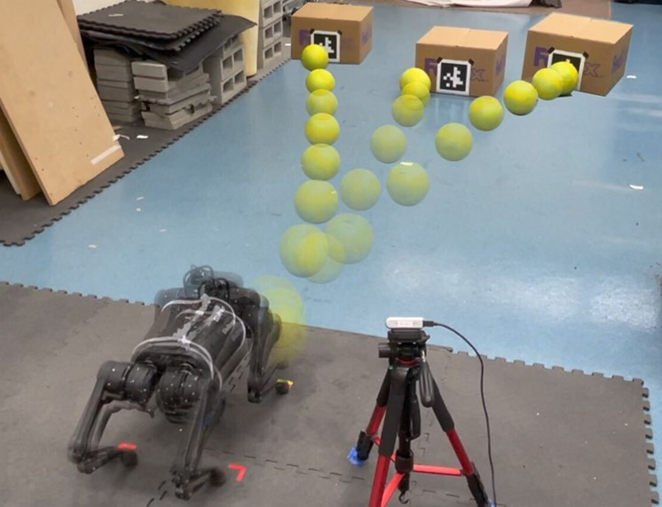
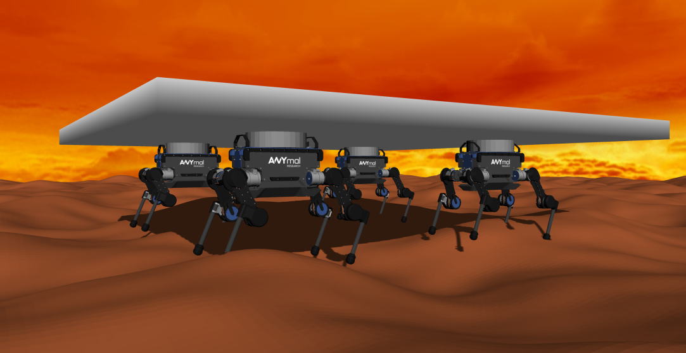
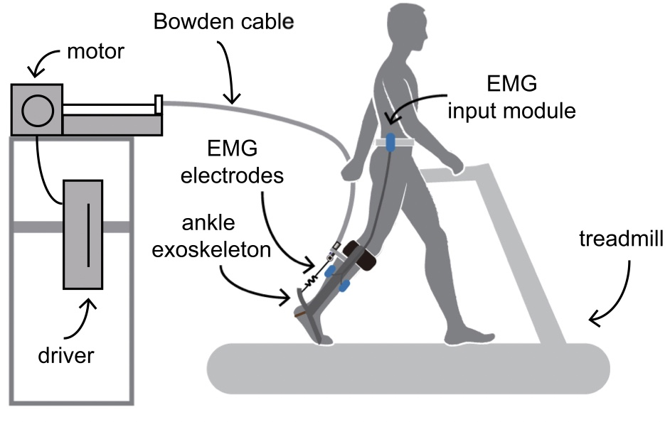

|
Yandong Ji
I am a visiting researcher at MIT CSAIL Improbable AI Lab advised by Pulkit Agrawal. Currently I'm working on quadrupedal robots and reinforcement learning.
I received an MEng in Mechnical Engineering from the University of California, Berkeley in 2022 advised by Koushil Sreenath, and received a BEng in Intelligent Science and Technology from Nankai University in 2021 advised by Juanjuan Zhang and Xian Guo.
Email /
Resume /
Bio /
Google Scholar /
Twitter /
Github
|
|
|
Research
I'm interested in legged robots and multi-modal learning.
|
|

|
Hierarchical reinforcement learning for precise soccer shooting skills using a quadrupedal robot
Yandong Ji*,
Zhongyu Li*,
Yinan Sun,
Xue Bin Peng,
Sergey Levine,
Glen Berseth,
Koushil Sreenath
IROS, 2022, Best RoboCup Paper Award Finalist
project page
/
arXiv
/
TechXplore
We build an off-policy planner on top of an on-policy controller to fine-tune the shooting performance in real world.
|
|

|
Reinforcement Learning for Collaborative Quadrupedal Manipulation of a Payload over Challenging Terrain
Yandong Ji,
Bike Zhang,
Koushil Sreenath
IEEE CASE, 2021
project page
Reward shaping for a distributed architecture of manipulating a payload on uneven terrain.
|
|

|
Evaluation of lower leg muscle activities during human walking assisted by an ankle exoskeleton
Wei Wang, Jianyu Chen,
Yandong Ji,
Wei Jin,
Jingtai Liu,
Juanjuan Zhang
IEEE Transactions on Industrial Informatics, 2020
We measured multiple electromyography-based metrics of five lower leg muscles to systematically evaluate the exoskeleton assistance performance.
|
|
{kind=link}